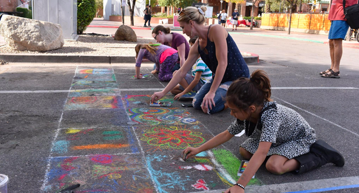
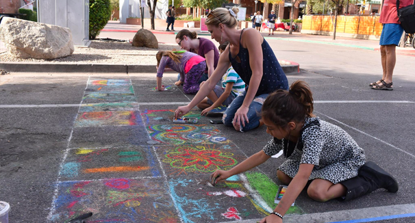
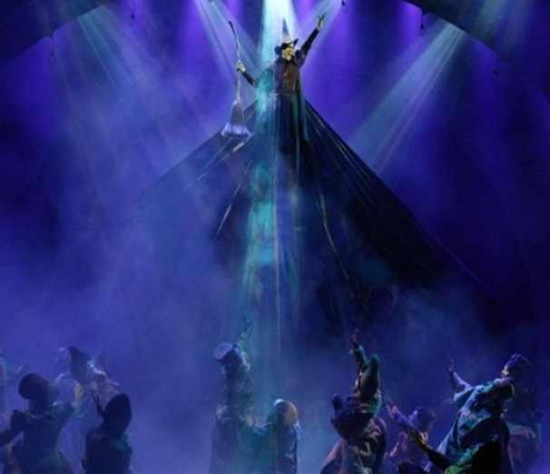
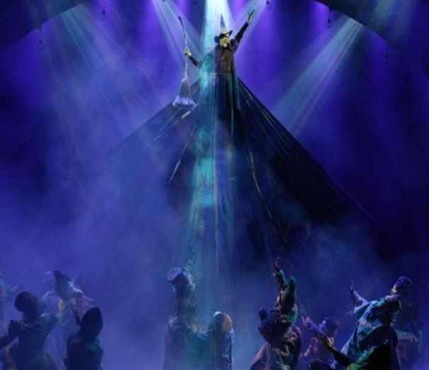

About Us
Enjoy a day of art, music, culinary delights, and boutique shopping as Germantown Avenue, between Willow Grove and Rex Avenue, is transformed into an outdoor arts and crafts marketplace. Chestnut Hill is a backdrop for more than 100 talented artists throughout the Mid-Atlantic region. A fabulous array of artistic choices is on display, including oils, watercolors, etchings, photography, sculpture, pottery, wood crafts, jewelry, and accessories!
Germantown Avenue will be closed to all vehicular traffic as fine arts and crafts, live entertainment, exhibits, and children’s rides and activities take place up and down the street between the 8000 and 8600 blocks of Germantown Avenue. Visitors can stroll the Avenue to view and purchase fine arts and crafts, enjoy live music or dine al fresco.
Admission to the festival is free!

 
